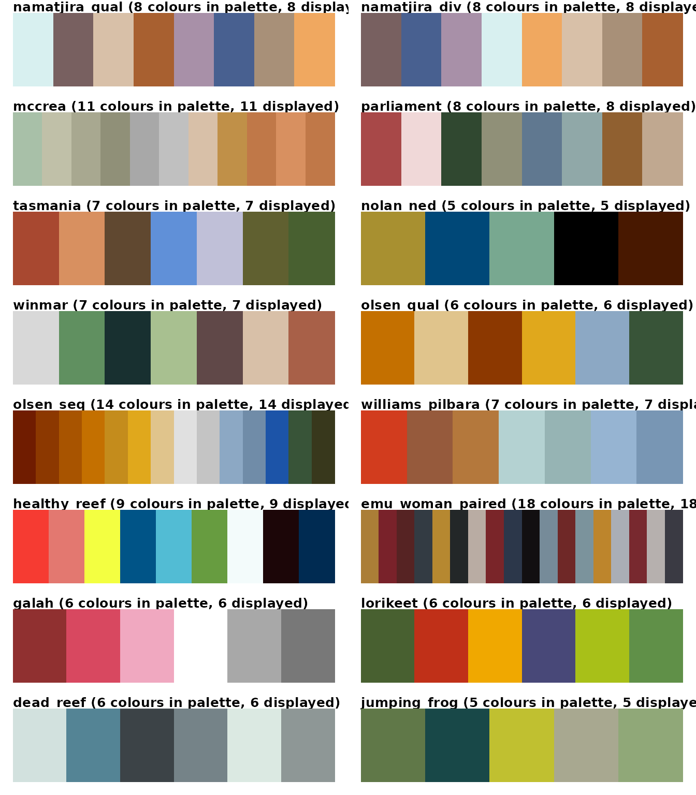
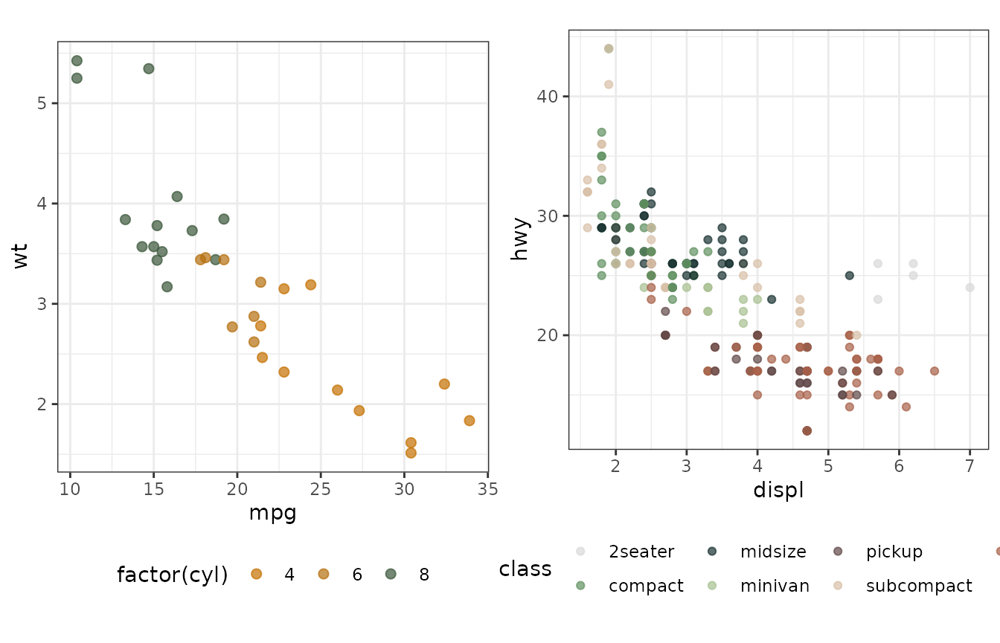
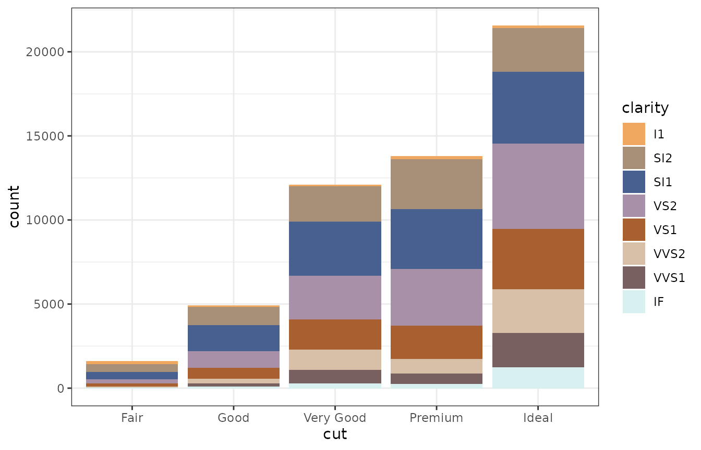
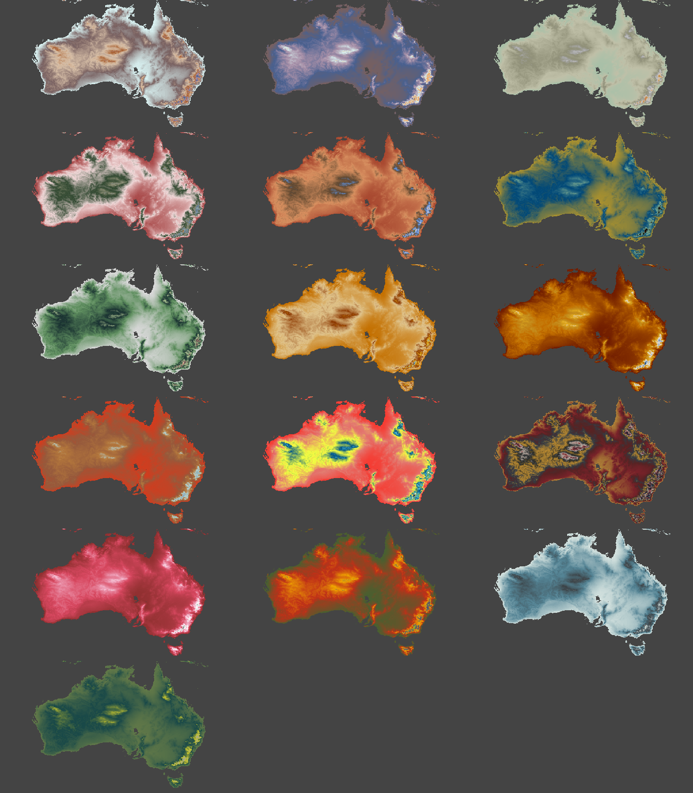

ochre.Rmd“Welcome to all people… To this land of ochre” - Ruby Hunter
The ochre package contains colour palettes inspired by the Australian landscape, iconic Australian artists and images.
install.packages("ochRe")Or the development version
devtools::install_github("ropenscilabs/ochRe")The package contains sixteen colour palettes.
# See names of all palettes
names(ochre_palettes)## [1] "namatjira_qual" "namatjira_div" "mccrea" "parliament"
## [5] "tasmania" "nolan_ned" "winmar" "olsen_qual"
## [9] "olsen_seq" "williams_pilbara" "healthy_reef" "emu_woman_paired"
## [13] "galah" "lorikeet" "dead_reef" "jumping_frog"
The ochRe package contains color scale functions for ggplot plots: scale_color_ochre() and scale_fill_ochre().
Here the olsen_qual and winmar palettes are used for a scatter plot of mtcars data.
p1 <- ggplot(mtcars, aes(mpg, wt)) +
geom_point(aes(colour = factor(cyl)), size=2, alpha=0.7) +
scale_colour_ochre(palette="olsen_qual") +
theme_bw() +
theme(aspect.ratio=1, legend.position="bottom")
p2 <- ggplot(data = mpg) +
geom_point(mapping = aes(x = displ, y = hwy, color = class), alpha=0.7) +
scale_colour_ochre(palette="winmar") +
theme_bw() +
theme(aspect.ratio=1, legend.position="bottom")
grid.arrange(p1, p2, ncol=2)
Here the default palette namatjira_qual is used in a stacked bar chart using the diamonds data.
ggplot(diamonds) + geom_bar(aes(x = cut, fill = clarity)) +
scale_fill_ochre() + theme_bw() 
The following shows elevation in Australia with each of the palettes.
#load("../data/oz_elev.rda")
data(elev)
par(mfrow=c(6, 3))
for (curCol in ochre_palettes%>%names()){
colpal <- ochre_pal(palette = curCol)(150)
ex <- extent(110, 155, -45, -10)
elev <- raster::crop(elev, ex)
elev[elev < 0] <- NA
topo <- list(x = xFromCol(elev), y = rev(yFromRow(elev)),
z = t(as.matrix(elev))[, nrow(elev):1])
par(mar = rep(0, 4), bg = "#444444")
image(topo, useRaster = TRUE, col = colpal,
axes = FALSE, xlab = "", ylab = "",
asp = cos(27.5 * pi/180))
}
par(mfrow=c(1,1))
These palettes are based on the painting “Twin Ghosts”, by Albert Namatjira. Each palette has eight colours.
http://www.menziesartbrands.com/sites/default/files/field/catalogue_items//DM_24017.jpg
This palette is based on the painting “Melbourne, Collins St”, 1841, by Georgiana McCrae. It has eleven colours.
https://upload.wikimedia.org/wikipedia/commons/c/c0/Melbourne_Collins_Street_1841.jpg
This palette is based on based on the tapestry in the Great Hall of Parliament House, of a landscape by Arthur Boyd - Untitled (Shoalhaven Landscape), 1984, as well as the colours of the and House of Representatives and the Senate. It has eight colours.
Parliament House: https://www.peo.gov.au/learning/closer-look/australias-parliament-house/a-place-for-the-parliament.html
This palette is based on colours in the bay of fires and cradle mountain. It has seven colours.
This palette is based on the painting “Ned Kelly”, 1946, by Sidney Nolan. It has five colours.
This palette is based on a photograph by Wayne Ludbey, “Nicky Winmar St Kilda Footballer”, 1993. It has seven colours.
These palettes are based on the painting “Sydney Sun”, 1965, by John Olsen. olsen_qual has six colours, olsen_div has 14 colours.
This palette is based on the painting “Mount Nameless (morning)”, 1981, by Fred Williams. The palette has seven colours.
http://www.art-almanac.com.au/wp-content/uploads/2013/11/benalla_mt_nameless_review_1213.jpg
This palette is based on colours of the great barrier reef. The palette has nine colours.
http://aussiedestinationtours.com/wp-content/uploads/2014/07/Greatbarrierreef.jpg
This palette is based on the painting “Emu Woman”, 1988–89, by Emily Kame Kngwarreye, The palette has eighteen colours.
http://www.nma.gov.au/__data/assets/image/0003/225939/88_Emu_Woman_w480.jpg
This palette is based on the colours of the rainbow lorikeet. It has six colours.
http://reptilepark.com.au/wp-content/uploads/2015/11/birds_rainbow_lorikeet2.jpg
This palette is based on the colours a bleached barrier reef. It has six colours.
http://cdn.newsapi.com.au/image/v1/7c2f433cd1e020a6ad1b7018070c55a6
{kind=link}
{kind=link}
{kind=link}
{kind=link}
{kind=link}
{kind=link}
{kind=link}
{kind=link}
{kind=link}
{kind=link}
{kind=link}
{kind=link}